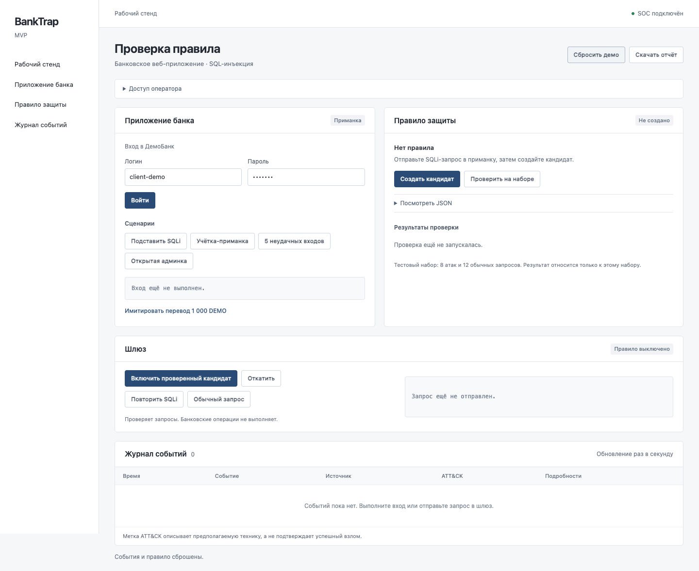
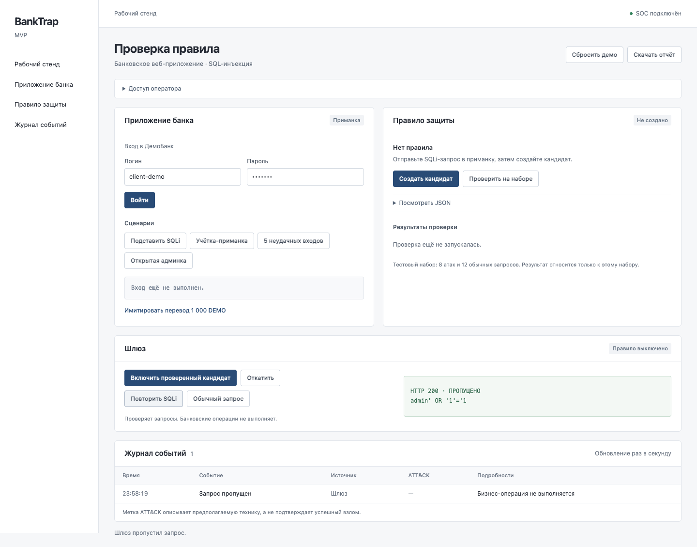
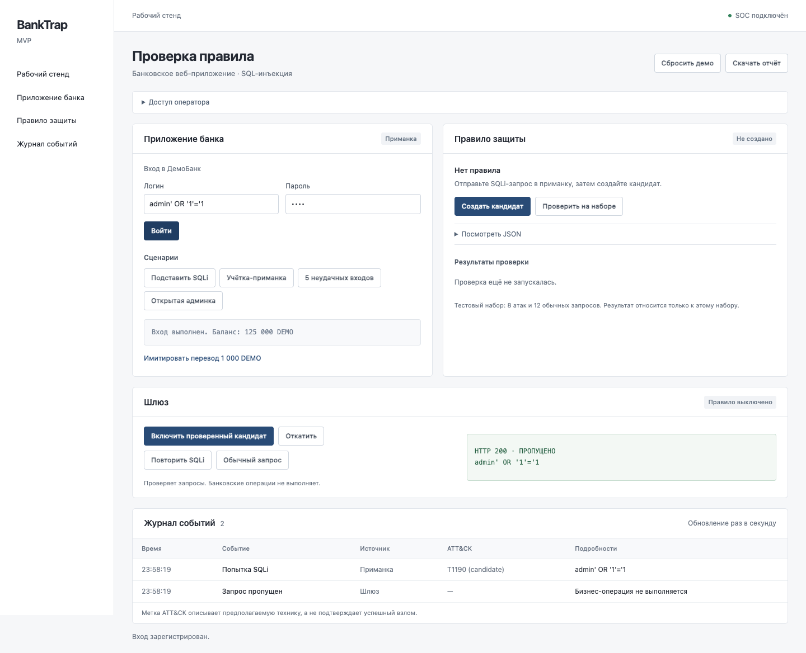
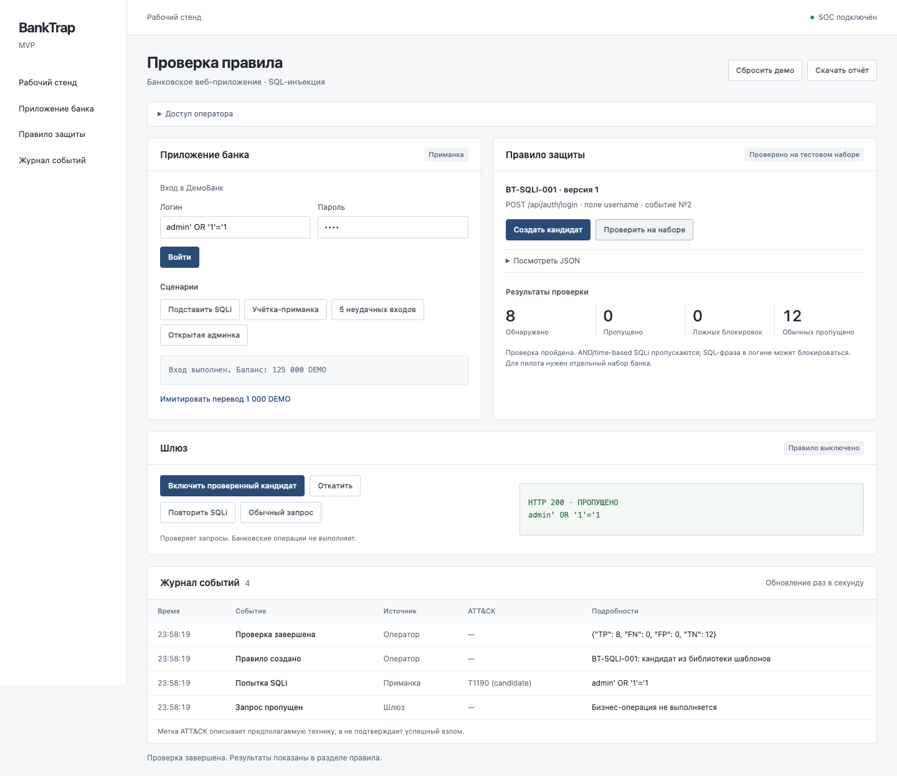
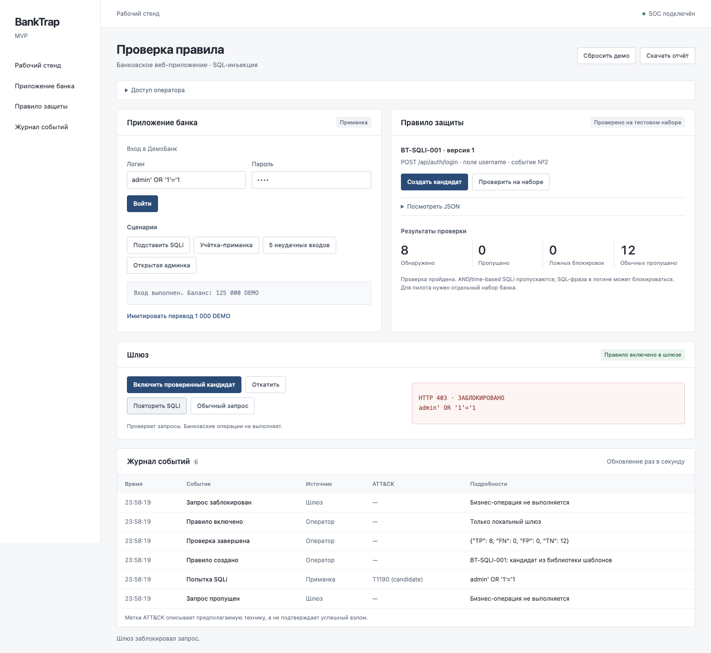
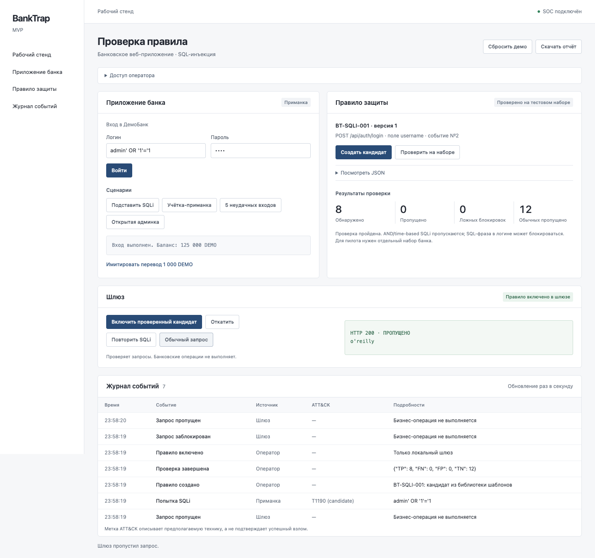
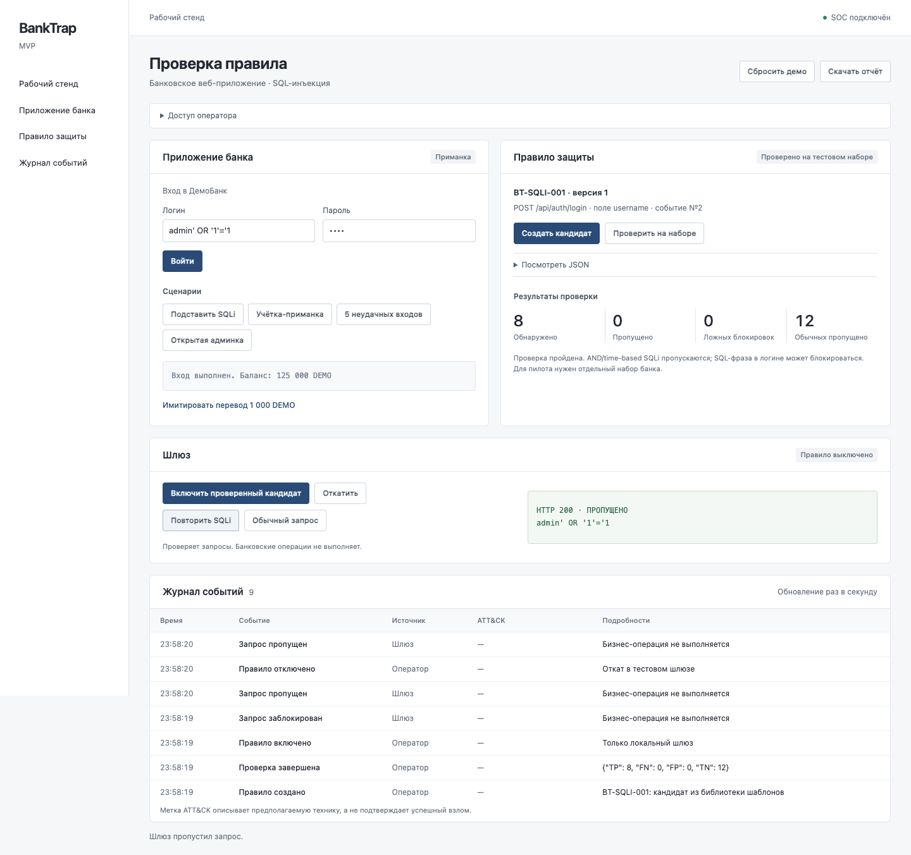

1. Начальное состояние
SOC подключён. Событий ещё нет, правило выключено.

Нажмите на снимок, чтобы открыть его в полном размере.
SOC подключён. Событий ещё нет, правило выключено.

Шлюз пропускает SQLi-запрос: HTTP 200.

Приманка имитирует вход. В журнале появляется «Попытка SQLi» с меткой T1190.

На демонстрационном наборе: 8 атак обнаружено, 12 обычных запросов пропущено. Известные ограничения перечислены в интерфейсе.

После включения правила тот же запрос получает HTTP 403.

Логин с апострофом o'reilly получает HTTP 200 при включённом правиле.

Правило отключено. Повторный запрос снова получает HTTP 200.
